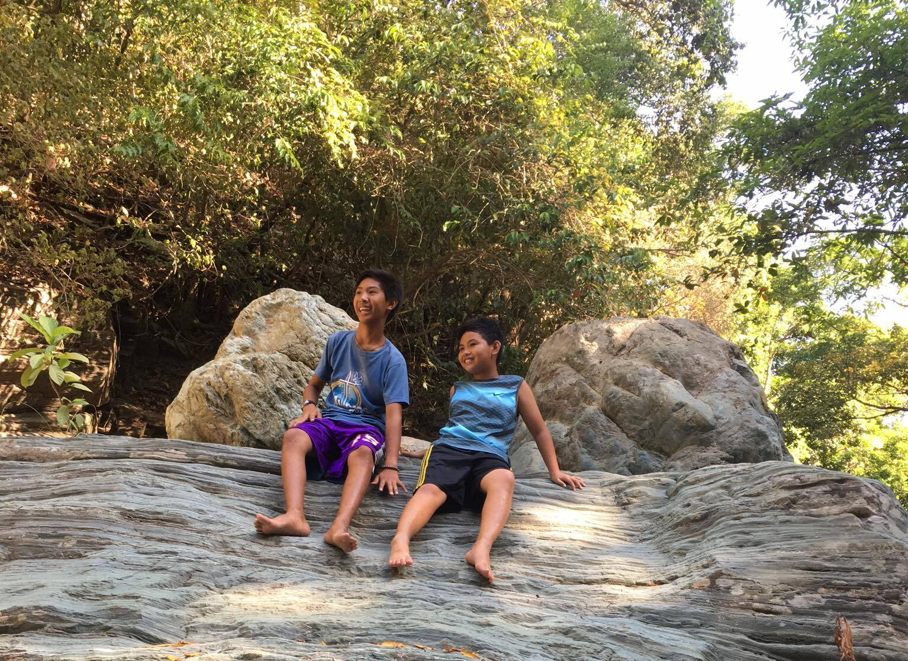
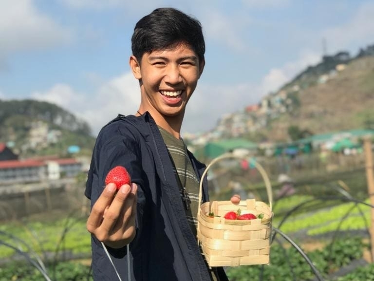
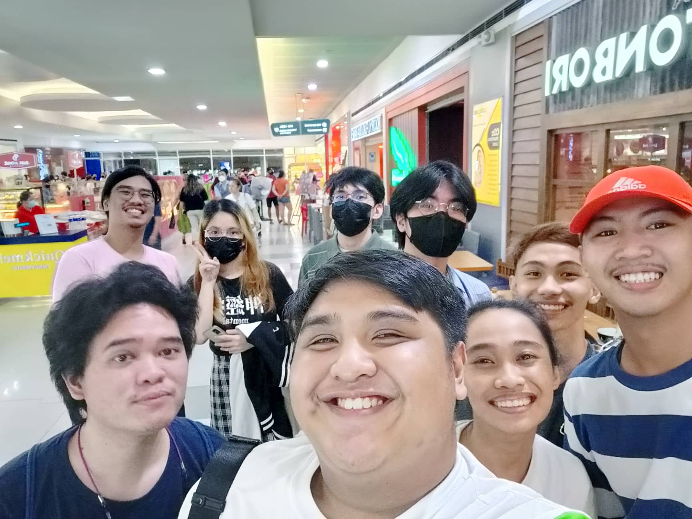

Short Story of a Long Life
By Andal, Denver Nicholo M.
CHILDHOOD
My childhood days were so great1. It is an experience that I cherish until now2. I have 2 siblings, my brother, and sister3. I am from Mamburao, Occidental Mindoro, where I experience my childhood4. In my childhood days, I usually play outside of our house5. I also play computer when raining outside6. My hobbies in my childhood days are playing with toys with my friend’s neighborhood7. My Father called me botong for my nickname8. Also, my siblings, they have their own nicknames 9. When I was a child, I'm a person that always want to come with my parents10. I love toys, so my mother bought me a toy11. If my mother doesn’t want to buy me a toy, I always cry even if we are in the mall12. In my childhood days, I remember Santa Clause gave me a toy on Christmas 13. Every year I wanted to invite my friends to our house on Christmas 14. I loved seeing my friends enjoying playing or eating with me15. My childhood days are more of a joyful experience because I can do the things that I want to play16. There was a time when my classmates and I always play the computer outside our school, after our last subject17. In my elementary school days, there is have a drum and lyre, and I join with a few of my classmates18. It was very fun since I want to parade while drumming 19. I realized that in my childhood, I create amazing memories with my family, friends, and classmates, And These are a few stories of my childhood years. 20


GO to TOP
TEENAGE
My teenage years are full of enjoyment, this was my high school days1. This was the time that I and my high school friends are very close to each other2. There was a time when we were always active in intramurals in our school3. I always join in our school sportsfest4. My sport is table tennis and basketball5. The teenage years are the stage of being active in school and also going out with friends6. When I was in high school days my classmates and friends are inviting me to go to the computer shop and play7. This was the time that I joined the organization8. I met a lot of friends that help me in my teenage year9. I was too active in that organization, to the point I travel because of that org10. In my teenage year, I learn a lot of things that at the teenage level you can see11. There was a time of up and downs in my level12. Somehow in those experiences, I learn a lot in every part of that situation13. There was also a time that people come and go in the teenage years14. Sometimes lose friends and then new friends15. But I also encounter making friends outside the school16. Go somewhere in public with my friends, eat in tusok tusok17. In this stage, there will be also a best friend that will listen to me18. Many things and memories have passed us by but the joy of those days still remains 19. Many realizations come up in my teenage years, and these are a few stories of my teenage years20.


GO to TOP
COLLEGE
College years or being a college life1. I think college life is all about exploring things and making memories2. And the most interesting thing about college life is that we are stuck in between our childhood3. My college life starts in the middle of the pandemic4. A time that all schools are online class set up5. But even though we are in that situation, I feel like were in college years or college life6. Online class setup is very different from face-to-face 7. Times that I can’t meet my classmates8. It’s difficult to make memories with my classmates9. Bonding with them on stressful days10. There was a time that my classmates set a meeting, even if we never met once because of the pandemic11. And I realized we’re on college life12. Another achievement of our life, but also a new challenge for us13. And then the UE announce that we will be having a face-to-face in the second semester14. It’s sad but also, I’m glad to be back in UE and meet my classmates15. Lots of lessons to be learned in college life16. You can see the joy and do not drain yourself or pressure17. Just look around and make memories in college life, it’s fun18. So, in this amazing phase of our life, we should enjoy life fearlessly and work really hard for our bright future19. And these are a few stories of my college years20.

GO to TOP